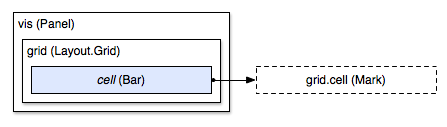
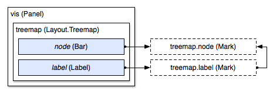
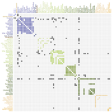

Layouts
[When] you see excellent graphics, find out how they were done. Borrow strength from demonstrated excellence. The idea for information design is: Don’t get it original, get it right. —Edward Tufte
Introduction
At its core, Protovis is intended as a concise, declarative representation of custom data graphics. Implicit in the label “custom” is that visualization specifications are largely unique: the code is simple enough to not require reuse across charts, beyond basic copy-and-paste. Yet despite the inherent value in expressiveness and flexibility necessary to support custom graphics, it is obvious that most visualization designs are not unique. Thus, we introduce a mechanism to encapsulate useful techniques for reuse across visualizations, called layouts.
Layouts (in various forms) are common to many visualization and user interface toolkits—they reduce the code required to implement common visualizations types, while offering more consistent behavior by eliminating implementation-specific idiosyncrasies. Most importantly, they make available an extensible set of visualization designs for much lower cost, allowing these designs to see wider adoption.
Despite the prevalence of this approach, the exact form of abstraction matters. Competing with the desire to reuse layouts are two serious usability concerns: first, that the new abstraction will be difficult to learn; second, that the user must sacrifice expressiveness (i.e., customization and control) to facilitate reuse. To avoid these pitfalls, Protovis layouts are implemented as a set of related mark prototypes. Unlike previous approaches, layouts in Protovis do not introduce new fundamental abstractions, instead repurposing prototypal inheritance; prototype marks provide default properties to instantiate the layout design, while allowing a great deal of customization through property overrides and construction.
Design
Layouts in Protovis are a minor specialization of panels, which contain and replicate child marks. Indeed, the only difference between a panel and a layout is that the latter can support custom properties. These custom properties allow top-level configuration of the layout; for example, a treemap layout might support multiple algorithms (e.g., “slide-and-dice”, “squarify”, “voronoi”), while a force-directed network layout might allow tweaking of spring tension or drag coefficients. Whereas standard properties, such as fillStyle and visible, share a single namespace, layout properties tend to be special-purpose and are thus defined locally.By reusing panels and properties, the design is familiar to existing users; the mental model required to understand layouts is simpler. In addition, this leverages the expressiveness of the core language: layouts can be replicated and embedded in the mark hierarchy as any other mark or panel, and, any layout properties can be specified using data-driven functions. This simplifies the creation of small multiples of layouts with varying parameters, and allows layouts to be nested hierarchically, similar to HiVE. We will explore example shortly.
Limitations
Before we dive more deeply into the design, it is important to keep in mind two potential complications of our approach:
Layout implementations typically require an additional pre-processing step per instance, where the bulk of the layout work is performed; this is typically accomplished by overriding the internal buildImplied method. Although this detail can be overlooked by users of layouts, it must be understood to implement a new layout, and represents a divergence from standard mark and panel specification. This is discussed in more detail later in relation to psuedo-properties.
The minimalism of the layout interface means there is no guarantee of consistency across layout implementation: users must understand the semantics of the mark prototypes for each implementation in order to instantiate and customize the layout. A practical solution to this problem is the establishment of sensible practices across layout designs, and to reuse code whenever possible (e.g., across hierarchical and network layouts).
Mark Prototypes
The core idea behind Protovis layouts is that a set of related mark prototypes can instantiate reusable visualization designs. To better illustrate how mark prototypes are used, we now go through a series of example layout implementations. For each example, a diagram shows panel enclosure (using nested rectangles) and property inheritance (using directed arrows). Off-screen mark prototypes that are not directly visible are shown with a dashed outline.The grid layout is arguably the simplest non-trivial layout implementation: given a two-dimensional array of data, it divides the layout panel into a series of equally-spaced rows and columns. It exports a single mark prototype, cell, with positional properties computed from the mark index. For instance, the left margin is (width / cols) * (index % cols), where cols is the number of columns derived from the data. If our two-dimensional array contains numbers that represent elevation, we can make a simple topographic map using a grid of colored bars:
vis.add(pv.Layout.Grid)
.rows(heatmap)
.cell.add(pv.Bar)
.fillStyle(pv.Scale.linear()
.domain(95, 115, 135, 155, 175, 195)
.range("#0a0", "#6c0", "#ee0", "#eb4", "#eb9", "#fff"));
Adding a layout to a visualization looks similar to adding a panel, with two differences: we use custom properties such as rows to configure the layout, and we add to a mark prototype such as cell rather than adding directly to the panel. By adding to the cell prototype in this example, we are creating a new bar that inherits properties from cell, while simultaneously adding it to the layout panel. As a diagram:
|  |

|
Thus, the root panel vis contains the grid layout (line 1). The layout in turn contains the added bar (line 3); this bar extends from the cell prototype. We can override properties on the added bar (lines 4-6), which trump any default logic inherited from the prototype.
Note that the cell prototype is not contained inside the layout: this is what is meant by an “off-screen” prototype. The prototype is not rendered directly, being used only for extending properties to added marks (such as the bar, here). This gives the user control over and visibility into how marks are added to the scene graph: the user can choose the order in which marks are added, affecting z-order; the user can choose the implementation of the added mark (for example, using a panel or another layout rather than a bar); the user can pick and choose which prototype to add, if multiple prototypes are available.
Data and Replication
All marks in Protovis have a data property that controls replication: a mark instance is created for each element in the data array. The cell prototype exported by the grid layout has a data property derived from the layout’s rows property: the two-dimensional array is flattened (blended) into a one-dimensional array. The data on the added bar are thus the numbers in the heatmap array, which is then used to derive the fill style.
More powerful, and yet conceptually similar, is the treemap layout. Like the grid layout, treemaps can be instantiated by adding a bar to the layout’s mark prototype; the treemap’s prototype is called node—rather than cell—but serves a similar function in exporting positional properties based on the results of running the squarified treemap layout algorithm. (The choice of treemap algorithm can be specified using the mode custom property.) In addition, the treemap layout provides a label prototype that is slightly smarter than anchoring a label to the center of the bar:
|  |

|
The label prototype extends from the node prototype, although this is purely for the sake of convenience. We can instantiate a treemap by first adding it to a panel, then adding the node bar, and finally adding the label:
var treemap = vis.add(pv.Layout.Treemap)
.nodes(pv.dom(flare).nodes())
.padding(6);
treemap.node.add(pv.Bar)
.fillStyle(function(d) d.firstChild ? "rgba(31, 119, 180, .25)" : "#ff7f0e");
treemap.label.add(pv.Label)
.visible(function(d) !d.firstChild);
The layout can also be used as the root panel directly, if desired.
We have customized the treemap layout slightly by redefining the fill style: we use translucent blue for internal nodes, and opaque orange for leaf nodes. This in conjunction with the six-pixel padding makes it easy to see the tree structure through nested containment. We also override the label visibility so as to hide label on internal nodes; an alternative strategy would be to position the labels at the top-left corner, which can be done by adding a label to the bar:
treemap.node.add(pv.Bar)
.add(pv.Label)
.textAlign("left")
.textBaseline("top")
.text(function(d) d.nodeName);
As with all properties in Protovis, properties are defined in terms of data. With layouts, this means that we can access the underlying data structure used by the layout when defining properties. For example, the treemap layout computes the size and depth of each node as a side-effect of running the treemap algorithm; these attributes are then exposed through the data and can be used to derive custom properties. Th above example uses the firstChild attribute to distinguish internal from leaf nodes.
By changing the definition of the inherited data properties, layouts can change how marks are replicated. For example, the matrix layout visualizes the adjacency matrix of a graph. The link prototype functions similar to the grid layout’s cell, in that it is designed to be used with a bar to render a filled rectangle; in this case, the data property of the link prototype is every pair of nodes in the graph. The fill style is derived from the linkValue attribute, which is 0 if the nodes are not connected, and positive if they are.

|  |
Similarly, the label prototype’s data array contains two references to each node in the graph, such that a label can be generated across the top of the matrix, and down the left side. Labels can be rendered in alternative positions by overriding the left and top properties if desired.
Implicit Replication
While the data property provides one level of replication, with some layouts this is insufficient: a second level of replication is needed. This is accomplished by inserting a panel between the layout and any added marks. For example, the stack layout can be used to generate a streamgraph, which contains multiple stacked area marks. The data for the area is derived from the layer prototype, and contains each value for the associated series; the layers are replicated in an enclosing panel, with one instance per series.

|

|
We call this implicit replication because the interstitial panel is not explicitly added by the user. Instead, the panel is inserted by the layout when the area is added to the layer prototype:
vis.add(pv.Layout.Stack)
.layers(data)
.order("inside-out")
.offset("wiggle")
.x(x.by(pv.index))
.y(y)
.layer.add(pv.Area)
.fillStyle(pv.ramp("#aad", "#556").by(Math.random))
.strokeStyle(function() this.fillStyle().alpha(.5));
The stack layout also makes use of special properties that are evaluated by the layout, rather than using the standard property evaluation mechanism: we call these psuedo-properties. For example, the x and y properties are evaluated for each value in each layer. In effect, these properties behave as if they were defined on the added area rather than the layout, but they are evaluated earlier along with the other layout properties (during the stack layout’s buildImplied). The stack layout stores the return values of these psuedo-properties internally, and uses this generated data (the layer thickness for each value in the dataset) to define the inherited mark properties.
Thus, although psuedo-properties are evaluated through a different mechanism than standard properties, users can, in general, blissfully ignore the difference. Psuedo-properties can be defined in identical fashion to standard properties, as either functions or constants. With the stack layout, for example, we might use a linear scale for x and y. The psuedo-properties are evaluated in the same context as normal properties, and thus can access the data and index (this.index) transparently. Psuedo-properties can also be used to provide comparator functions to order-dependent layouts (such as the previously-discussed matrix layout), in order to sort the data; in this case, the evaluation order of the psuedo-property is dependent on the sort algorithm.
Implicit replication offers surprising flexibility in terms of layout implementation. The horizon layout, for example, uses a panel to replicate an area mark for each band; the band is then cropped by setting the the panel’s overflow property to “hidden”:

|

|
Node-link diagrams, such as the radial tree layout, also use implicit replication for the link prototype. With this layout, the link prototype is intended to be used with a line, and the data property is a two-element array for the source node and target node of each link. The interstitial panel’s data is, correspondingly, the array of all links:

|

|
The three prototypes provided by the tree layout match those provided by the other network and hierarchy layouts—two abstract layouts designed to share code across implementations. After the layout is configured, the user can instantiate the link, node and label in the desired z-order:
var tree = vis.add(pv.Layout.Tree)
.nodes(pv.dom(flare).root("flare").nodes())
.depth(110)
.breadth(9.35)
.orient("radial");
tree.link.add(pv.Line);
tree.node.add(pv.Dot);
tree.label.add(pv.Label);
As this example shows, while some amount of duplicate code is necessary with this system to instantiate the mark prototypes, the amount of code is negligible. Furthermore, almost all visualizations will desire customization, even if only to override a single property, or change the z-order or added marks. The Protovis layout architecture allows powerful visualization techniques to be encapsulated for reuse, while retaining a great deal of flexibility through prototypal inheritance.
Related Reading
Bederson, B. B., J. Grosjean, & J. Meyer. Toolkit Design for Interactive Structured Graphics, IEEE Transactions on Software Engineering, 30 (8), pp. 535-546, 2004.Heer, J. & Agrawala, M. Software Design Patterns for Information Visualization, IEEE Transactions on Visualization and Computer Graphics (TVCG), 12 (5). Sep/Oct 2006.